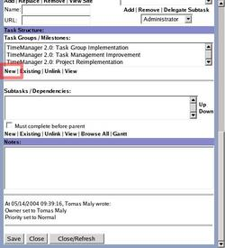
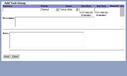
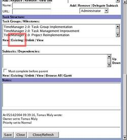
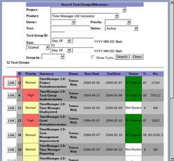
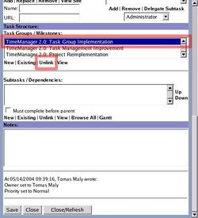

Task Groups and Milestones provide a way to organize tasks into a common goal, with the ability to see the status of reaching this goal at a much broader (and quicker) level.
To add a new task group, click on the 'New' button in the task group section. You must fill out the information and click on 'Save' from within the task group page, as well as click on 'Save' from within the task page for the link to take effect.
 To link to an existing task group / milestone, click on 'Existing'. This takes you to a search page for the task groups. If the task has a product, that is automatically selected in the search form. After filling in the criteria and clicking on 'Search', one must click on the 'Link' button to the left of the task group for it to be added to the list. Click on it only once. After you add all the task groups / milestones you want, click 'Close' on the search page to go back to the task page. You must click on 'Save' for the new links to take effect.
 To disassociate a task group / milestone from this task, click on the task group / milestone, and then on 'Unlink'. You must click on 'Save' at the bottom or top of the screen to make it take effect.
